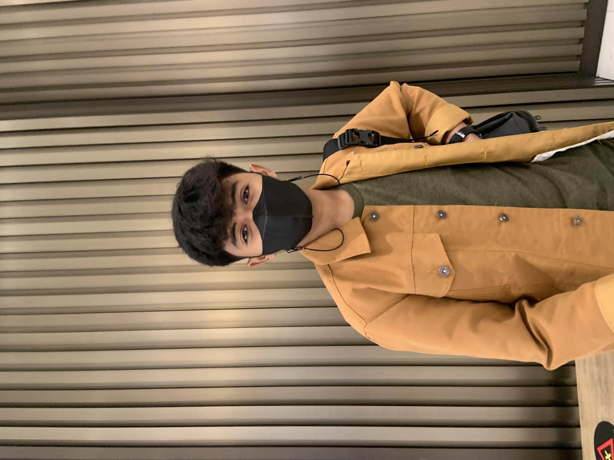

Perkenalkan nama saya Muhammad nurfaqih pratama saya lulusan ponpes ulumul Qur`an dan saya berkuliah di STT Terpadu nurul fikri tahun 2022
| Data Diri | Keterangan | Foto |
| Nama | Muhammad Nurfaqih Pratama |  |
| NIM | 0110122058 | |
| Rombel | SI06 | |
| Tempat, Tanggal lahir | Jember, 28 Agustus 2003 | |
| Umur | 19 Tahun | |
| Alamat | Jln.Raya Parung Bogor Kec.Parung Kab.Bogor |
|
| Jenis kelamin | Laki-laki | |
| Agama | Islam | |
| Kewarganegaraan | Indonesia | |
| Status | Belum menikah | |
| Kesehatan | Sangat Baik | |
| Hoby | Basket Ball | |
| Instansi | STT Terpadu Nurul Fikri | |
| No Tlpn | 088223819095 | |
| Social Media | Instagram @nurfaqihp_ |
| Soft Skill | Hard Skill |
| Comunation | Photography |
| Beradaptasi | Typhography |
| Kerja sama tim | Basket Ball |
| Berfikir kritis | Mengajar |
| Leader | Arab language |
| Pendidikan Formal | Tahun |
| SD Negeri parung 01 Parung Bogor | 2008-2015 |
| MTS Ulumul Qur`an Bojong Sari Depok | 2015-2018 |
| MA Ulumul Qur`an Bojong Sari Depok | 2018-2021 |
| Organisasi | Tahun |
| Organisasi Pesantren(OPPUQ) | Ulumul Qur`an Islamic Boarding Shool 2018-2019 |
| Pengembangan tata usaha | Ulumul Qur`an Islamic Boarding School 2018-2019 |
| Cleanlines Departement | Ulumul Qur`an Islamic Boarding School 2019-2020 |
| Basket Ball Team | Parung Basket Ball Club (PBC) 2021-2022 |
| Curiculum Departement | MTS/MA Al-hikmah Tangerang 2021-2022 |